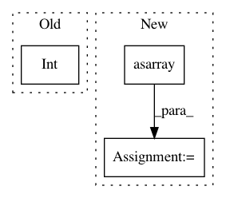

bba1901f835525551dde9ec1537d041abc88d293,deslib/static/oracle.py,Oracle,predict,#Oracle#Any#Any#,77
Before Change
x_feat = x[self.estimator_features_[idx]].reshape(1, -1)
predicted = clf.predict(x_feat)[0]
if predicted == y[sample_index]:
predicted = int(predicted)
predicted_labels[sample_index] = predicted
break
predicted_labels[sample_index] = predicted
After Change
y = self.enc_.transform(y)
preds = [clf.predict(X[:, self.estimator_features_[idx]])
for idx, clf in enumerate(self.pool_classifiers_)]
preds = np.asarray(preds).T
hit_miss = np.asarray(preds) == y.reshape(-1, 1)
idx_sel_classifier = hit_miss.argmax(axis=1)
predicted_labels = preds[np.arange(preds.shape[0]), idx_sel_classifier]
In pattern: SUPERPATTERN
Frequency: 3
Non-data size: 3
Instances
Project Name: scikit-learn-contrib/DESlib
Commit Name: bba1901f835525551dde9ec1537d041abc88d293
Time: 2021-04-08
Author: rafaelmenelau@gmail.com
File Name: deslib/static/oracle.py
Class Name: Oracle
Method Name: predict
Project Name: scikit-multiflow/scikit-multiflow
Commit Name: e42bf473dde3f85210ff90b24c53865663abae29
Time: 2020-06-02
Author: 17923265+jacobmontiel@users.noreply.github.com
File Name: tests/meta/test_adaptive_random_forests.py
Class Name:
Method Name: test_adaptive_random_forests_nba
Project Name: ellisdg/3DUnetCNN
Commit Name: ab0ff941fe4f6469730a8711d40eb32fbc9eacdf
Time: 2017-11-17
Author: david.ellis@unmc.edu
File Name: unet3d/model.py
Class Name:
Method Name: compute_level_output_shape